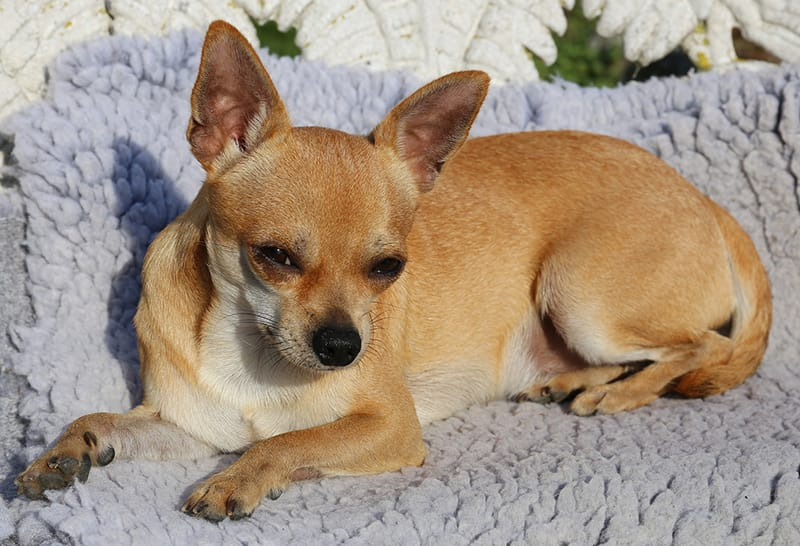

<ion-header>
  <ion-toolbar>
    <ion-title>Chapter 2</ion-title>
  </ion-toolbar>
</ion-header>

<ion-content>
  <p>There once was a dog who lived with a cat.  Her name was Cheeka.  She was a chihuahua.</p>
  
  <ion-button color="success" expand="full" [routerDirection]="'root'" [routerLink]="['/chapter1']">Go Back to Chapter 1</ion-button><br>
  <ion-button color="warning" expand="full" [routerDirection]="'root'" [routerLink]="['/chapter3']">Go Forward to Chapter 3</ion-button>
 </ion-content>

 <div id="content">
  <div id="pageFooter">Page </div>
</div>